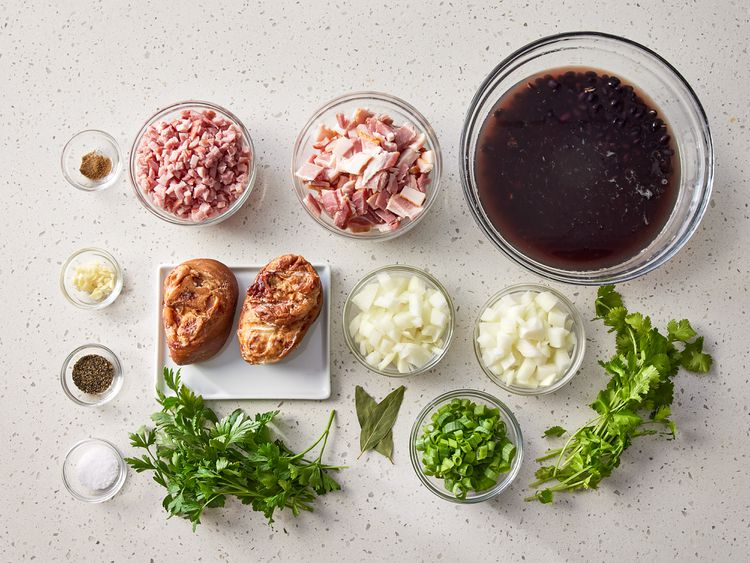
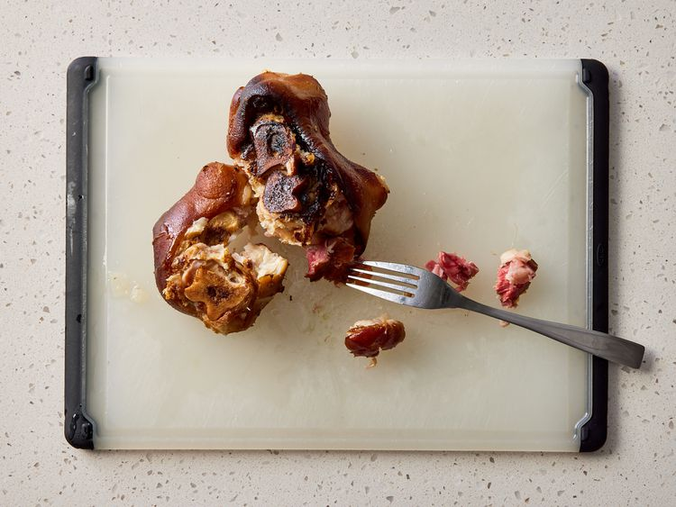
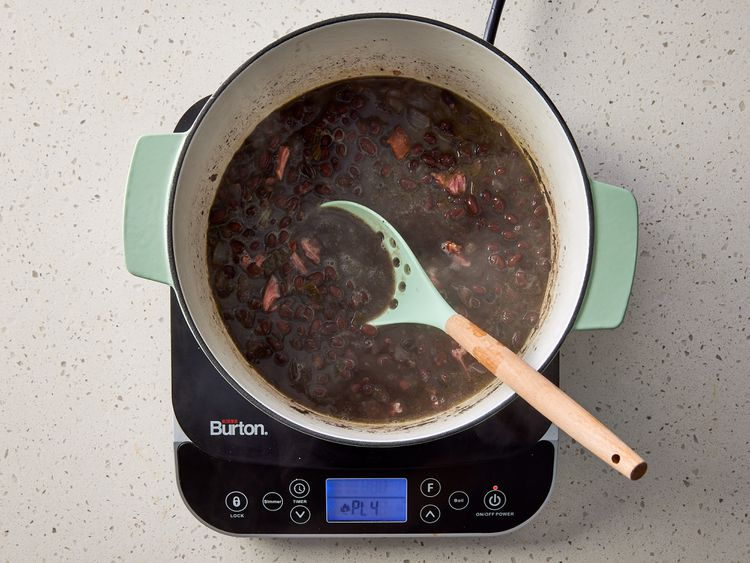
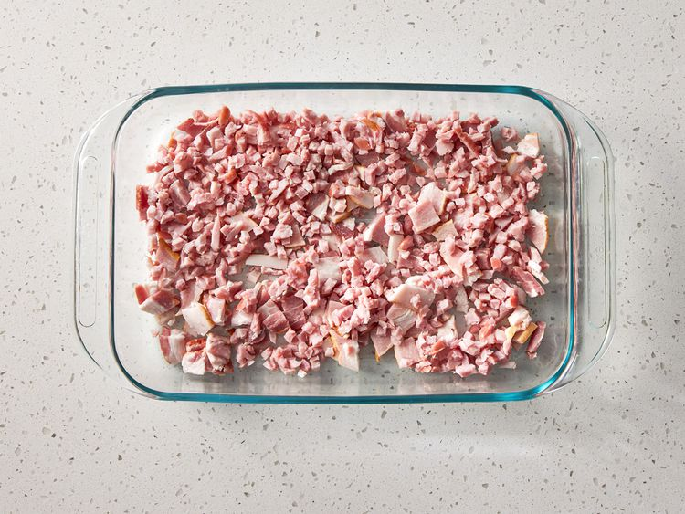
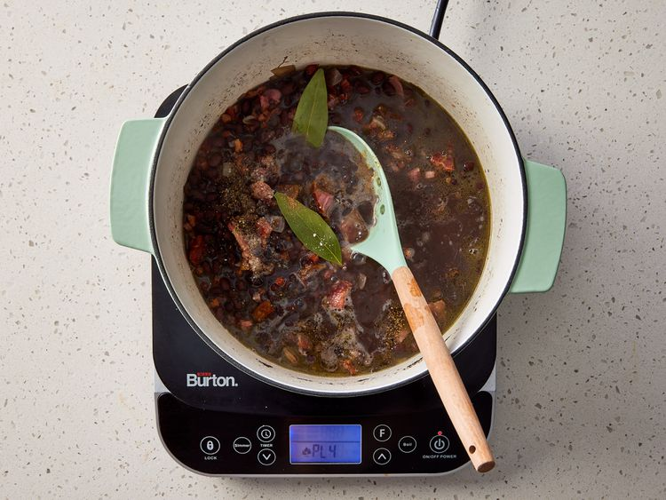
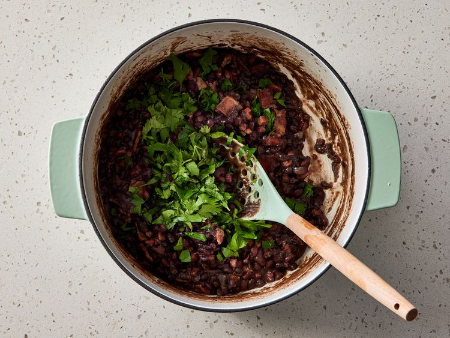

This feijoada recipe is my version of a traditional Brazilian black bean stew that maintains the rich flavors famous in Brazil.
Excellent served over brown rice. Additional meats, including pork loin or smoked sausage, may be added if desired.
Gather all ingredients.
Heat oil in a large pot or Dutch oven. Add 3/4 cup chopped onion, green onions, and garlic; cook and stir until softened, about 4 minutes.
Pour in soaked beans and fill with enough water to cover beans by 3 inches. Bring to a boil, then reduce heat to medium-low,
and simmer uncovered for 2 hours, or until tender.
While beans are cooking, place ham hocks in a smaller pot with 1/4 cup chopped onion.
Cover with water and simmer until meat pulls off of the bone easily, about 1 hour.
Drain and add to beans. Meanwhile, preheat the oven to 375 degrees F (190 degrees C).
Place ham, bacon, and remaining onion in a baking dish. Bake until mixture is crispy, 15 minutes.
Drain bacon and ham mixture and add to beans. Season with bay leaves, coriander, salt, and pepper. Simmer, uncovered, 30 minutes more.
Stir in chopped cilantro and parsley just before serving. Enjoy!
Source Allrecipes